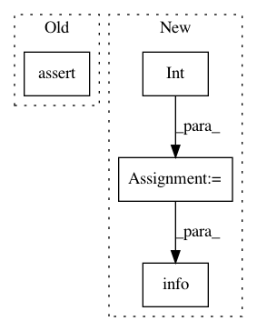

ffa271e34384438030753e46e20322ea8dc489a4,niftynet/engine/application_driver.py,ApplicationDriver,_randomly_init_or_restore_variables,#ApplicationDriver#Any#,202
Before Change
// check model"s file
checkpoint = "{}-{}".format(self.session_dir, self.initial_iter)
assert tf.train.get_checkpoint_state(self.model_dir) is not None, \
"Model file not found {}*, please check" \
"config parameter: model_dir and *_iter".format(checkpoint)
// restore session
tf.logging.info("Accessing {} ...".format(checkpoint))
self.saver.restore(sess, checkpoint)
After Change
assert checkpoint, "checkpoint path not found " \
"in {}/checkpoints".format(self.model_dir)
try:
self.initial_iter = int(checkpoint.rsplit("-")[-1])
tf.logging.info("set initial_iter to {} based "
"on checkpoints".format(self.initial_iter))
except ValueError:
tf.logging.fatal("failed to get interation number"
"from checkpoint path")
raise ValueError
In pattern: SUPERPATTERN
Frequency: 3
Non-data size: 4
Instances
Project Name: NifTK/NiftyNet
Commit Name: ffa271e34384438030753e46e20322ea8dc489a4
Time: 2017-08-23
Author: wenqi.li@ucl.ac.uk
File Name: niftynet/engine/application_driver.py
Class Name: ApplicationDriver
Method Name: _randomly_init_or_restore_variables
Project Name: ray-project/ray
Commit Name: 261b2f90530ac4ebba7f58ffec4f19b62e87c9e8
Time: 2020-12-15
Author: ed.nmi.oakes@gmail.com
File Name: dashboard/agent.py
Class Name: DashboardAgent
Method Name: __init__
Project Name: NifTK/NiftyNet
Commit Name: 6d854ec8c54e0eb0a73635f41b0598f2d2231069
Time: 2017-09-01
Author: wenqi.li@ucl.ac.uk
File Name: niftynet/engine/image_window_buffer.py
Class Name: InputBatchQueueRunner
Method Name: _create_queue_and_ops